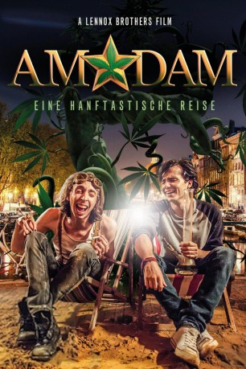
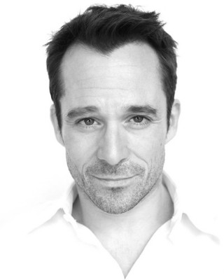

#4569 AmStarDam
Alternativ: Stoner Express (Originaltitel)
 
 IMDB-Wertung: 4.6 / 10
IMDB-Wertung: 4.6 / 10  Metascore: 0
Metascore: 0 
Jack ist Amerikaner, gerade 21 Jahre alt geworden, und in Amsterdam auf der Suche nach seinem Vater, den er bis dato nie kennengelernt hat. Alles, was er weiß, ist, dass sein Erzeuger vor Jahren in der niederländischen Kiffer-Metropole einen Coffee-Shop betrieben hat. In der Hauptstadt angekommen, freundet sich Jack schnell mit seinem Vater und dessen Freunden - allesamt seltsame Gestalten - an und entdeckt eine Geheimwaffe, die den maroden Coffee-Shop wieder in Schwung bringen könnte: eine gigantische Marihuana-Pflanze, die über Nacht plötzlich aus dem Boden schießt. Der unerwartete Geschäftsboom ruft jedoch schnell Neider hervor ...
Jahr: 2016
Dauer: 111 Minuten
FSK:
Land: England Studio: Lighthouse Home EntertainmentTonspuren: DTS - ,
Untertitel:
Auflösung: 1080p (1920x808) Größe: 8192 MB
Genre: Komödie
Regisseur: Lee Lennox, Wayne Lennox
Drehbuch: Jeffrey Hatcher
Soundtrack:
Darsteller:
- Jonathan Readwin als Jack
-  Sean Power als Mick
- Eline Powell als Desiree
- Eric Lampaert als Loz
- Kenneth Collard als Eddie
 Alice Lowe als Roxy
Alice Lowe als Roxy Billy Boyd als Gordon
Billy Boyd als Gordon- Dannielle Brent als Pixie
- Ricky Champ als Branislav
- Yana Yanezic als Robber Two
 Richard Glover als Commentator
Richard Glover als Commentator- Howard Marks als Howard Marks
- Javone Prince als Pete
- Ben Goffe als Clarence
- Francesca Papagno als Pipa
- Anthony Cozens als Spencer
- Mandy Dassa als Mischa
- John Clark als Audience Member
- Jana Dowling als Sinderella
 Kornelia Horvath als Coffee Shop Customer
Kornelia Horvath als Coffee Shop Customer- Rachael Linnen als Sinderella
- Samantha Moodie als Sinderella
Datei: X:\2016(A-F)\AmStarDam (2016, FSK, 1920x808).mkv seit 17.10.2016
Festplatte: HD 2016(A-Z)
 Es gibt insgesamt 147 Filme in der Gruppe '2016(A-F)'
Es gibt insgesamt 147 Filme in der Gruppe '2016(A-F)'